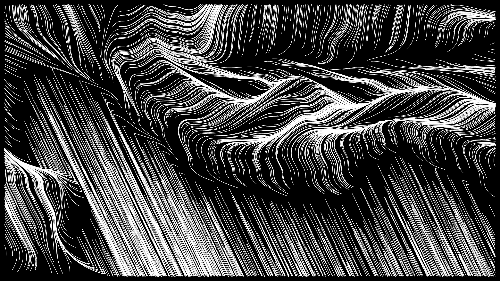

Ravines
Un court métrage d’animation fait avec la géométrie des tortues et du bruit de Perlin.
19 septembre 2018

Ce court métrage est sur YouTube.
Contexte
Cette note de blog fait partie de mon projet de recherche Vers un cinéma algorithmique, démarré en avril 2018. Je vous invite à consulter la toute première note du projet pour en apprendre davantage.